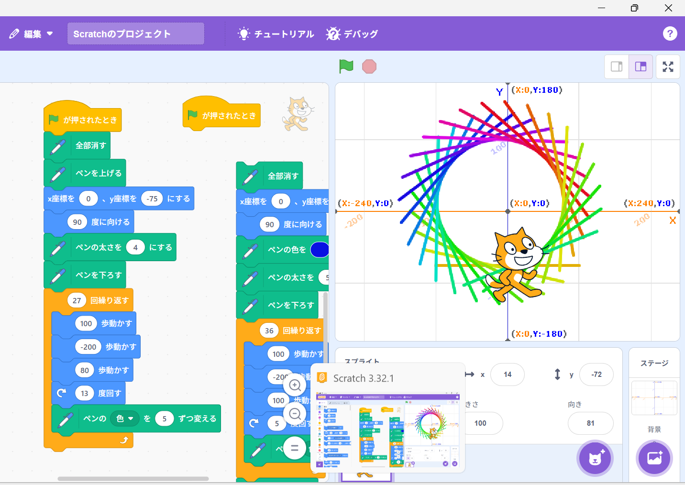
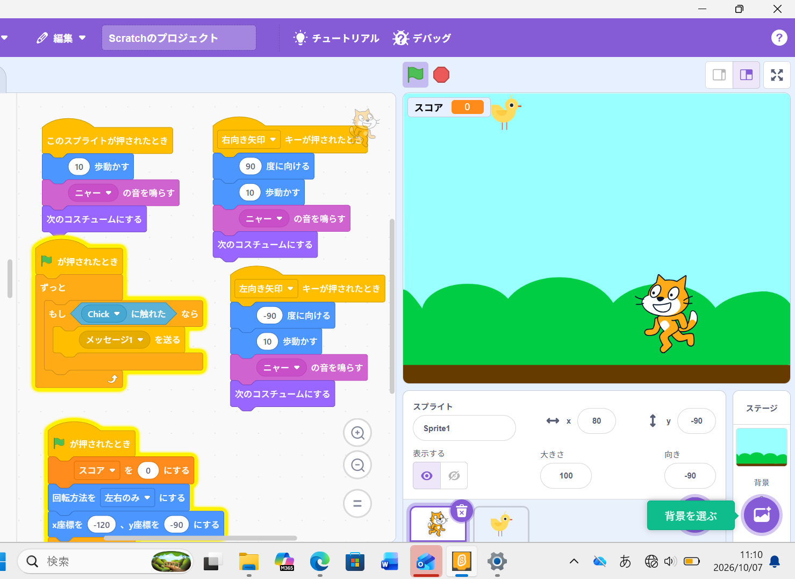

1週目のレポート ： 公大高専１年実習I-1
4b班42番 yuuzudo
第1週目
1-1 サイエンスアート

1.内容
スクラッチを使用してキャラクターを操作した。
キャラクターの動いた軌跡に色を付け、キャラクターに規則的なプログラムを与えて、幾何学的模様を描いた。
2.感想
思いのほか単純な動きでも十分美しい模様を描くことができた。よく目にするデザインも裏側は数字で成り立っていると思うと面白い。
1-2 ゲーム

1.内容
今度は、サイエンスアートよりも複雑なリンゴを取って得点するゲームを作った。もし○○ならなど条件を付けてプログラムしてゲームの仕組みを作った。
2.感想
これまでに学校でスクラッチなど触ったことがなくゲームを作ると聞いて難しそうに感じたがちゃんとできてよかった。
ゲームの仕組みはたくさんの条件とそれに対応する動きを指定して作っているように感じた。
1-3 ホームページ作成
私のホームページ
1.内容
githubのアカウント作成と、自分のホームページの編集の仕方を学んだ。また改行の仕方を知ることができた。
また、作成したホームページのリンクをクラスルームに提出した。
2.感想
よくわからない文字の羅列にしか見えないが、一つ一つに意味があって、面白い。早く読めるようになりたい。
打ち込むだけで開業などの操作ができるので、wordよりも楽にできそうに感じた。
各ページへのリンク
1週目のレポート
2週目のレポート
3週目のレポート
私のホームページ